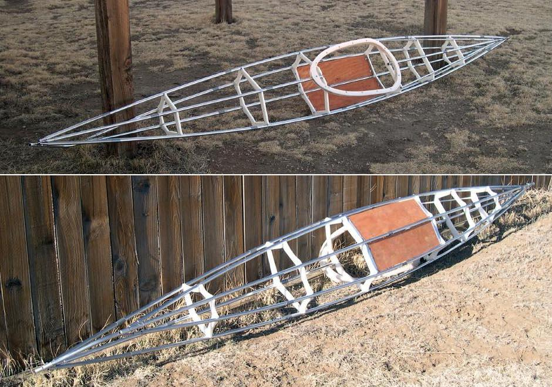

| Sea Otter / Sea Otter - R | Menu Last Page Next Page |
|
 The finished frame seen from top and bottom. The bow and stern are separate sections ( 1.5ft each), and the remaining 12ft is made in 3ft sections. This 15ft boat will pack up small for airline travel. In addition, a motorcycle transport case is being constructed for those of us who like to ride and kayak. |
|